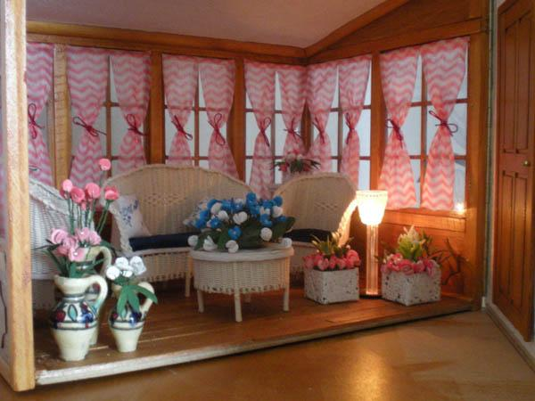

Dit is dan mijn 30er jarenhuis, voor 99% heb ik het helemaal zelf gemaakt!
De lambrisering is voor een groot deel gemaakt van tongspatels..
De ramen maak ik uit plastic deksels bv van een doos kerstkaarten..
Inclusief de meubeltjes, later kom ik daar op terug..
De bloemen maak ik van gekleurd papier en dun ijzerdraad.
De plantenbakken zijn van sigarenkistjeshout, beplakt met restjes behang..
De plantenbak aan de achterkant is beplakt met saté prikkers in stukjes gezaagd.
In de bakken zit wat oase, beplakt met koffie..
Het danseresje komt uit de kringloopwinkel...
De gordijntjes in de serre zijn schoonmaakdoekjes, ik koop ze per rol bij Axion.
Het bankstel heb ik geweven op ijzerdraad, met katoen breigaren en een heleboel geduld!
De vaasjes komen ook uit de kringloopwinkel..
Het lampje is gemaakt van een lege bic balpen, en een waterbuisje van een orchidee .
Beide hol dus het stroomdraadje kan er prima door geregen worden..
De vloeren door het hele huis heb ik latje voor latje gesneden uit de bodems van sigarenkistjes.
